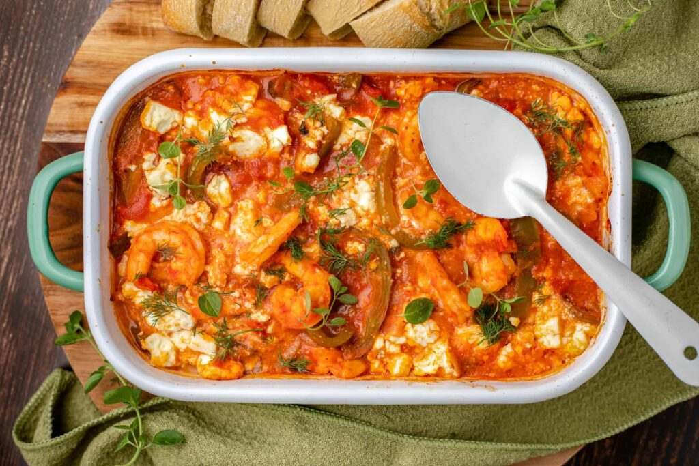

Garnalen saganaki met feta, tomaat en ouzo
Saganaki is een traditioneel Grieks gerecht wat in de basis een gerecht is van gebakken kaas die in een sagani pan wordt bereid.
Ingrediënten
- 2 uien, in dunne halve maantjes
- bakolijfolie
- zout
- 3 teentjes knoflook, fijngehakt
- 1 groene paprika, in dunne reepjes
- 1 el tomatenpuree
- 50 ml ouzo
- 1 blik (400 gr) gepelde San Marzano tomaten
- 8 takjes verse oregano, blaadjes fijngehakt
- zwarte peper
- 500 gr grote garnalen, gepeld en schoongemaakt
- 200 gr feta, in blokjes
- olijfolie extra vergine
- 2 takjes dille, blaadjes fijngehakt
- serveer erbij: knapperig brood
Bereidingswijze
- Verhit een hapjespan en fruit de uien 5 minuten in een scheut bakolijfolie met een goede snuf zout. Voeg de knoflook en paprika toe en bak een paar minuten mee. Roer de tomatenpuree erdoor en bak nog 1 minuut.
- Schenk de ouzo in de pan (pas op met open vuur) en laat iets inkoken. Roer daarna de gepelde tomaten erdoor met 2/3 van de fijngehakte oregano en laat 10 minuten pruttelen op laag vuur. Roer tussentijds de tomaten stuk. Proef na 8 minuten en voeg nog een snufje peper toe. Eventueel ook zout, maar vergeet niet dat er ook nog een blok feta in het gerecht gaat.
- Verwarm ondertussen de oven voor op 200 graden en zet een ovenschaal klaar waar straks alle in past, circa 20 x 30 cm.
- Voeg na 10 minuten de garnalen toe aan de saus, roer door en laat op laag vuur pruttelen garen tot de garnalen net roze worden. Roer daarna de helft van de blokjes feta erdoor en zet het vuur uit. Schep alles over in de ovenschaal en verdeel de resterende blokjes feta erover en duw deze een beetje in de saus.
- Zet de ovenschaal 10 - 12 minuten in de oven tot de feta zacht begint te worden en her en der bruin begint te kleuren.
- Haal de schaal uit de oven, druppel er wat olijfolie extra vergine over (of een scheut, zoals ze het in Griekenland graag zien) en garneer met verse oregano en dille. Serveer de garnalen saganaki met knapperig brood en eventueel met ijskoude ouzo die je mixt met water en ijsblokjes in een longdrink glas.

Tip Als je een ovenbestendige koekenpan of skillet gebruikt, kun je deze in de oven plaatsen en heb je geen ovenschaal nodig.